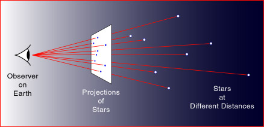
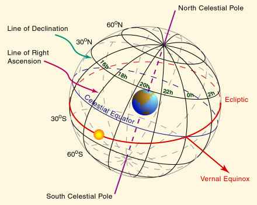
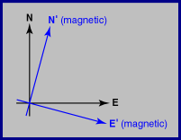
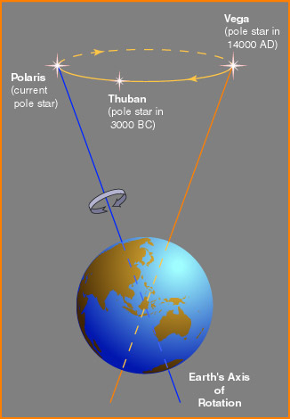
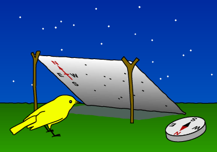
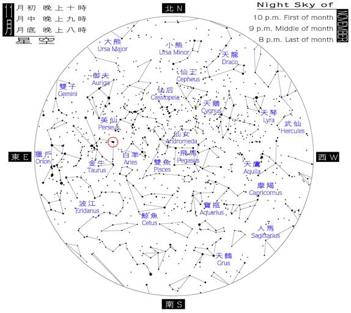
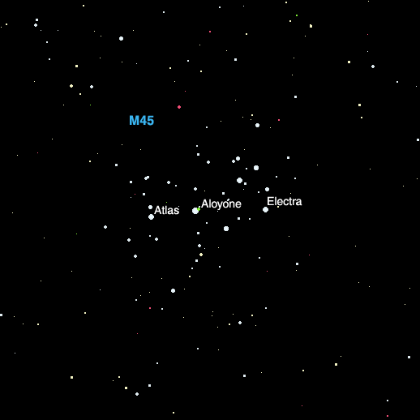

The sky "surrounds" us from all directions. We placed ourselves at the center of an imaginary sphere, the celestial sphere. Everything on the sky will appear on the celestial sphere.
 As mentioned in the last chapter, the celestial sphere does
not follow the rotation of the Earth. Thus, stars are fixed on the
celestial sphere.
As mentioned in the last chapter, the celestial sphere does
not follow the rotation of the Earth. Thus, stars are fixed on the
celestial sphere.
We need a coordinate system to tell the positions of the stars on the celestial sphere. It is similar to the longitude and latitude on the Earth surface. The projection of the rotational axis of the Earth marks the north celestial pole and the south celestial pole. The celestial equator is just the projection of the Earth's equator.

The declination, similar to the latitude, runs from +90° or 90°N, at the north celestial pole, to -90° or 90°S at the south celestial pole.The right ascension is different from the longitude. Instead of running from -180° to +180° like the longitude, the right ascension runs from 0 hour to 24 hours from west to east. Each hour has 60 minutes and each minute has 60 seconds, just like the clock. (Note: These minute and second are NOT equal to the arc minute and arc second introduced earlier. Do you know the differences?) The starting point of the right ascension is at the vernal equinox. Recall that vernal equinox is one of the two intersection points of the celestial equator and the ecliptic.
Remarks:



Some important constellations are, for example, the zodiac. Zodiac are the constellations that the ecliptic passes through. (Ophiuchus is not one of the zodiac, see Chapter 2.) Note that it is around January when the Sun is in Sagittarius, and in the evening, we will see Taurus and Gemini, etc. They are called the winter constellations. Similarly, we will see other constellations in other seasons.
But when we use a star map, we have to lie down and look up. Thus, the east and the west are "reversed."

There are many kinds of star atlas. The following is taken from the Hong Kong Space Museum. This shows the whole sky visible at some particular time. Lines connecting the stars are drawn to make the constellations more "visible." A bigger dot does not represent a larger star, it represents a brighter star. We will talk about stellar brightness later.
 |
| Courtesy Hong Kong Space Museum. |
Just to let you have an idea of what a serious star atlas looks like, the most detailed star atlas on paper nowadays is similar to the atlas below. This figure covers the area bounded by the red circle in the above all sky map.
